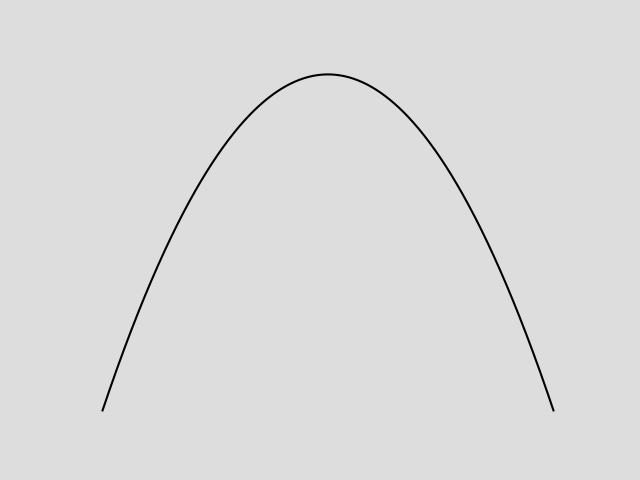
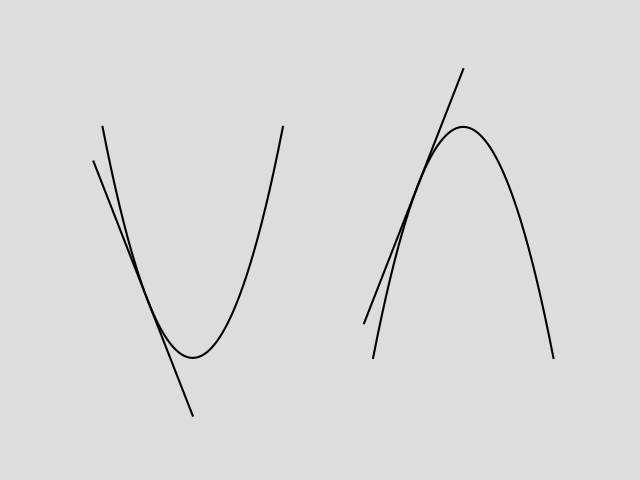

Pearson Edexcel International A Level Pure Mathematics 1
Chapter 1 Algebraic expressions
1.1 Index laws
You can use the laws of indices to simplify powers of the same base.
\( a^{m} \times a^{n} = a^{m + n} \)
\( a^{m} \div a^{n} = a^{m - n} \)
\( (a^{m})^{n} = a^{m n} \)
\( (a b)^{n} = a^{n} b^{n} \)
1.2 Expanding brackets
To find the product of two expressions you multiply each term in one expression by each term in the other expression.
1.3 Factorising
You can write expressions as a product of their factors.
Factorising is the opposite of expanding brackets.
-
A quadratic expression has the form \( a x^{2} + b x + c \) where \( a \), \( b \) and \( c \) are real numbers and \( a \neq 0 \).
To factorise a quadratic expression:
Find two factors of \( a c \) that add up to \( b \)
rewrite the \( b \) term as a sum of these two factors
Factorise each pair of terms
Take out the common factor
\( x^{2} - y^{2} = (x + y) (x - y) \)
1.4 Negative and fractional indices
Indices can be negative numbers or fractions.
You can use the laws of indices with any rational power.
\( a^{\frac{1}{m}} = \sqrt[m]{a} \)
\( a^{\frac{n}{m}} = \sqrt[m]{a^{n}} \)
\( a^{-m} = \frac{1}{a^{m}} \)
\( a^{0} = 1 \)
1.5 Surds
If \( n \) is an integer that is not a square number, then any multiple of \( \sqrt{n} \) is called a surd.
Surds are examples of irrational numbers. The decimal expansion of a surd is never-ending and never repeats, for example \( \sqrt{2} = 1.414213562... \)
You can use surds to write exact answers to calculations.
You can manipulate surds using these rules:
\( \sqrt{a b} = \sqrt{a} \times \sqrt{b} \)
\( \sqrt{\frac{a}{b}} = \frac{\sqrt{a}}{\sqrt{b}} \)
1.6 Rationalising denominators
If a fraction has s surd in the denominator, it is sometimes useful to rearrange it so that the denominator is a rational number. This is called rationalising the denominator.
The rules to rationalise denominators are:
For fractions in the form \( \frac{1}{\sqrt{a}} \), multiply the numerator and denominator by \( \sqrt{a} \).
For fractions in the form \( \frac{1}{a + \sqrt{b}} \), multiply the numerator and denominator by \( (a - \sqrt{b}) \).
For fractions in the form \( \frac{1}{a - \sqrt{b}} \), multiply the numerator and denominator by \( (a + \sqrt{b}) \).
Chapter 2 Quadratics
2.1 Solving quadratic equations
A quadratic equation can be written in the form \( a x^{2} + b x + c = 0 \), where \( a \), \( b \) and \( c \) are real constants, and \( a \neq 0 \). Quadratic equations can have one, two or no real solutions.
To solve a quadratic equation by factorising:
Write the equation in the form \( a x^{2} + b x + c = 0 \)
Factorise the left-hand side
Set each factor equal to zero and solve to find the value(s) of \( x \)
In some cases it may be more straightforward to solve a quadratic equation without factorising.
Some equations cannot be easily factorised. You can also solve quadratic equations using the quadratic formula.
The solutions of the equation \( a x^{2} + b x + c = 0 \) are given by the formula: \( x = \frac{-b \pm \sqrt{b^{2} - 4 a c}}{2 a} \)
2.2 Completing the square
It is frequently useful to rewrite quadratic expressions by completing the square:
\( x^{2} + b x = (x + \frac{b}{2})^{2} - (\frac{b}{2})^{2} \)
\( a x^{2} + b x + c = a (x + \frac{b}{2 a})^{2} + (c - \frac{b^{2}}{4 a}) \)
2.3 Functions
A function is a mathematical relationship that maps each value of a set of inputs to a single output. The notation \( f(x) \) is used to represent a function of \( x \).
The set of possible inputs for a function is called the domain.
The set of possible outputs of a function is called the range.
The roots of a function are the values of \( x \) for which \( f(x) = 0 \).
2.4 Quadratic graphs
When \( f(x) = a x^{2} + b x + c \), the graph of \( y = f(x) \) has a curved shape called a parabola.
You can sketch a quadratic graph by identifying key features.
The coefficient of \( x^{2} \) determines the overall shape of the graph.
When \( a \) is positive, the parabola will have this shape:
When \( a \) is negative, the parabola will have this shape:
The graph crosses the \( y \)-axis when \( x = 0 \). The \( y \)-coordinate is equal to \( c \).
The graph crosses the \( x \)-axis when \( y = 0 \). The \( x \)-coordinates are roots of the function \( f(x) \).
Quadratic graphs have one turning point. This can be a minimum or maximum. Since a parabola is symmetrical, the turning point and line of symmetry are half-way between the two points.
You can find the coordinates of the turning point of a quadratic graph by completing the square. If \( f(x) = a (x + p)^{2} + q \), the graph of \( y = f(x) \) has a turning point at \( (-p, q) \).
2.5 The discriminant
If you square any real number, the result is greater than or equal to \( 0 \).
This means that if \( y \) is negative, \( \sqrt{y} \) cannot be a real number. Look at the quadratic formula: \( x = \frac{-b \pm \sqrt{b^{2} - 4 a c}}{2 a} \)
If the value under the square root sign is negative, \( x \) cannot be a real number and there are no real solutions. If the value under the square root is equal to \( 0 \), both solutions will be the same.
For the quadratic function \( f(x) = a x^{2} + b x + c \), the expression \( b^{2} - 4 a c \) is called the discriminant.
If \( b^{2} - 4 a c > 0 \) then \( f(x) \) has two distinct real roots.
If \( b^{2} - 4 a c = 0 \) then \( f(x) \) has one repeated root.
If \( b^{2} - 4 a c < 0 \) then \( f(x) \) has no real roots.
Chapter 3 Equations and inequalities
3.1 Linear simultaneous equations
Linear simultaneous equations in two unknowns have one set of values that will make a pair of equations true at the same time.
Linear simultaneous equations can be solved using elimination or substitution.
3.2 Quadratic simultaneous equations
You must be able to solve simultaneous equations where one equation is linear and one is quadratic.
To solve simultaneous equations involving one linear equation and one quadratic equation, you need to use a substitution method from the linear equation into the quadratic equation.
Simultaneous equations with one linear and one quadratic equation can have up to two pairs of solutions. You need to make sure the solutions are paired correctly.
3.3 Simultaneous equations on graphs
You can represent the solutions of simultaneous equations graphically. As every point on a line or curve satisfies the equation of that line or curve, the points of intersection of two lines or curves satisfy both equations simultaneously.
Solutions to a pair of simultaneous equations represent the points of intersection of their graphs.
The graph of a linear equation and the graph of a quadratic equation can either:
-
intersect twice
-
intersect once
 -
not intersect

After substituting, you can use the discriminant of the resulting quadratic equation to determine the number of points of intersection.
3.4 Linear inequalities
You can solve linear inequalities using similar methods to those for solving linear equations.
The solution of an inequality is the set of all real numbers \( x \) that make the inequality true.
3.5 Quadratic inequalities
To solve a quadratic inequality:
Rearrange so that the right-hand side of the inequality is \( 0 \)
Solve the corresponding quadratic equation to find the critical values
Sketch the graph of the quadratic function
Use your sketch to find the required set of values
3.6 Inequalities on graphs
You may be asked to interpret graphically the solutions to inequalities by considering the graphs of functions that are related to them.
The values of \( x \) for which the curve \( y = f(x) \) is below the curve \( y = g(x) \) satisfy the inequality \( f(x) < g(x) \).
The values of \( x \) for which the curve \( y = f(x) \) is above the curve \( y = g(x) \) satisfy the inequality \( f(x) > g(x) \).
3.7 Regions
You can use shading on graphs to identify regions that satisfy linear and quadratic inequalities.
\( y < f(x) \) represents the points on the coordinate grid below the curve \( y = f(x) \).
\( y > f(x) \) represents the points on the coordinate grid above the curve \( y = f(x) \).
If \( y > f(x) \) or \( y < f(x) \) then the curve \( y = f(x) \) is not included in the region and is represented by a dotted line.
If \( y \geq f(x) \) or \( y \leq f(x) \) then the curve \( y = f(x) \) is included in the region and is represented by a solid line.
Chapter 4 Graphs and transformations
4.1 Cubic graphs
A cubic function has the form \( f(x) = a x^{3} + b x^{2} + c x + d \), where \( a \), \( b \), \( c \) and \( d \) are real numbers and \( a \) is non-zero.
The graph of a cubic function can take several different forms, depending on the exact nature of the function.

If \( p \) is a root of the function \( f(x) \), then the graph of \( y = f(x) \) touches or crosses the \( x \)-axis at the point \( (p, 0) \).
4.2 Reciprocal graphs
You can sketch graphs of reciprocal functions such as \( y = \frac{1}{x} \), \( y = \frac{1}{x^{2}} \) and \( y = -\frac{2}{x} \) by considering their asymptotes.
The graphs of \( y = \frac{k}{x} \) and \( y = \frac{k}{x^{2}} \), where \( k \) is a real constant, have asymptotes at \( x = 0 \) and \( y = 0 \).
4.3 Points of intersection
You can sketch curves of functions to show points of intersection and solutions to equations.
The \( x \)-coordinate(s) at the point(s) of intersection of curves with equations \( y = f(x) \) and \( y = g(x) \) are the solution(s) to the equation \( f(x) = g(x) \).
4.4 Translating graphs
You can transform the graph of a function by altering the function. Adding or subtracting a constant 'outside' the function translates a graph vertically.
The graph of \( y = f(x) + a \) is a translation of the graph \( y = f(x) \) by the vector \( \begin{pmatrix} 0 \\ a \end{pmatrix} \).
Adding or subtracting a constant 'inside' the function translates the graph horizontally.
The graph of \( y = f(x + a) \) is a translation of the graph \( y = f(x) \) by the vector \( \begin{pmatrix} -a \\ 0 \end{pmatrix} \).
When you translate a function, any asymptotes are also translated.
4.5 Stretching graphs
Multiplying by a constant 'outside' the function stretches the graph vertically.
The graph of \( y = a f(x) \) is a stretch of the graph \( y = f(x) \) by a scale factor of \( a \) in the vertical direction.
Multiplying by a constant 'inside' the function stretches the graph horizontally.
The graph of \( y = f(a x) \) is a stretch of the graph \( y = f(x) \) by a scale factor of \( \frac{1}{a} \) in the horizontal direction.
The graph of \( y = -f(x) \) is a reflection of the graph of \( y = f(x) \) in the \( x \)-axis.
The graph of \( y = f(-x) \) is a reflection of the graph of \( y = f(x) \) in the \( y \)-axis.
4.6 Transforming functions
You can apply transformations to unfamiliar functions by considering how specific points and features are transformed.
Chapter 5 Straight line graphs
5.1 \( \boldsymbol{y = m x + c} \)
You can find the gradient of a straight line joining two points by considering the vertical distance and the horizontal distance between the points.
The gradient \( m \) of a line joining the point with coordinates \( (x_{1}, y_{1}) \) to the point with coordinates \( (x_{2}, y_{2}) \) can be calculated using the formula \( m = \frac{y_{2} - y_{1}}{x_{2} - x_{1}} \).
The equation of a straight line can be written in the form \( y = m x + c \), where \( m \) is the gradient and \( c \) is the \( y \)-intercept.
The equation of a straight line can also be written in the form \( a x + b y + c = 0 \), where \( a \), \( b \) and \( c \) are integers.
5.2 Equations of straight lines
You can define a straight line by giving:
one point on the line and the gradient
two different points on the line
You can find an equation of the line from either of these conditions.
The equation of a line with gradient \( m \) that passes through the point with coordinates \( (x_{1}, y_{1}) \) can be written as \( y - y_{1} = m(x - x_{1}) \).
5.3 Parallel and perpendicular lines
Parallel lines have the same gradient.
Perpendicular lines are at right angles to each other. If you know the gradient of one line, you can find the gradient of the other.
If a line has a gradient of \( m \), a line perpendicular to it has a gradient of \( -\frac{1}{m} \).
If two lines are perpendicular, the product of their gradients is \( -1 \).
5.4 Length and area
You can find the distance between two points \( A \) and \( B \) by considering a right-angled triangle with hypotenuse \( A B \).
You can find the distance \( d \) between \( (x_{1}, y_{1}) \) and \( (x_{2}, y_{2}) \) by using the formula \( d = \sqrt{(x_{2} - x_{1})^{2} + (y_{2} - y_{1})^{2}} \).
Chapter 6 Trigonometric ratios
6.1 The cosine rule
For a right-angled triangle:
\( \sin \theta = \frac{\text{opposite}}{\text{hypotenuse}} \)
\( \cos \theta = \frac{\text{adjacent}}{\text{hypotenuse}} \)
\( \tan \theta = \frac{\text{opposite}}{\text{adjacent}} \)
The cosine rule can be used to work out missing sides or angles in triangles.
This version of the cosine rule is used to find a missing side if you know two sides and the angle between them: \( a^{2} = b^{2} + c^{2} - 2 b c \cos A \)
This version of the cosine rule is used to find an angle if you know all three sides: \( \cos A = \frac{b^{2} + c^{2} - a^{2}}{2 b c} \)
6.2 The sine rule
The sine rule can be used to work out missing sides or angles in triangles.
This version of the sine rule is used to find the length of a missing side: \( \frac{a}{\sin A} = \frac{b}{\sin B} = \frac{c}{\sin C} \)
This version of the sine rule is used to find a missing angle: \( \frac{\sin A}{a} = \frac{\sin B}{b} = \frac{\sin C}{c} \)
The sine rule sometimes produces two possible solutions for a missing angle:
\( \sin \theta = \sin (180^{\circ} - \theta) \)
6.3 Areas of triangles
You need to be able to use the formula for finding the area of any triangle when you know two sides and the angle between them.
\( \text{Area} = \frac{1}{2} a b \sin C \)
6.4 Solving triangle problems
TODO
6.5 Graphs of sine, cosine and tangent
-
The graphs of sine, cosine and tangent are periodic.
They repeat themselves after a certain interval period.
You need to be able to draw the graphs for a given range of angles.
-
The graph of \( y = \sin \theta \):
repeats itself every \( 360^{\circ} \) period and crosses the \( x \)-axis at \( ..., -180^{\circ}, 0^{\circ}, 180^{\circ}, 360^{\circ}, ... \)
has a maximum value of \( 1 \) and a minimum value of \( -1 \).
-
The graph of \( y = \cos \theta \):
repeats itself every \( 360^{\circ} \) period and crosses the \( x \)-axis at \( ..., -90^{\circ}, 90^{\circ}, 270^{\circ}, 450^{\circ}, ... \)
has a maximum value of \( 1 \) and a minimum value of \( -1 \).
-
The graph of \( y = \tan \theta \):
repeats itself every \( 180^{\circ} \) period and crosses the \( x \)-axis at \( ..., -180^{\circ}, 0^{\circ}, 180^{\circ}, 360^{\circ}, ... \)
has no maximum or minimum value
has vertical asymptotes at \( x = -90^{\circ} \), \( x = 90^{\circ} \), \( x = 270^{\circ} \), \( \text{...} \)
6.6 Transforming trigonometric graphs
You can use your knowledge of transforming graphs to transform the graphs of trigonometric functions.
Chapter 7 Radians
7.1 Radian measure
So far you have probably only measured angles in degrees, with one degree representing \( \frac{1}{360} \) of a complete revolution around a circle.
You can also measure angles in units called radians. \( 1 \) radian is the angle subtended at the centre of a circle by an arc whose length is equal to the radius of the circle.
The circumference of a circle of radius \( r \) is an arc of length \( 2 \pi r \), so it subtends an angle of \( 2 \pi \) radians at the centre of the circle.
\( 2 \pi \text{ radians} = 360^{\circ} \)
\( \pi \text{ radians} = 180^{\circ} \)
\( 1 \text{ radian} = \frac{180^{\circ}}{\pi} \)
7.2 Arc length
Using radians greatly simplifies the formula for arc length.
To find the arc length \( l \) of a sector of a circle, use the formula \( l = r \theta \), where \( r \) is the radius of the circle and \( \theta \) is the angle, in radians, contained by the sector.
7.3 Areas of sectors and segments
Using radians also greatly simplifies the formula for the area of a sector.
To find the area \( A \) of a sector of a circle, use the formula \( A = \frac{1}{2} r^{2} \theta \), where \( r \) is the radius of the circle and \( \theta \) is the angle, in radians, contained by the sector.
You can find the area of a segment by subtracting the area of triangle \( O P Q \) from the area of sector \( O P Q \).
The area of a segment in a circle of radius \( r \) is \( A = \frac{1}{2} r^{2} (\theta - \sin \theta) \)
Chapter 8 Differentiation
8.1 Gradient of curves
The gradient of a curve is constantly changing. You can use a tangent to find the gradient of a curve at any point on the curve. The tangent to a curve at a point \( A \) is the straight line that just touches the curve at \( A \).
The gradient of a curve at a given point is defined as the gradient of the tangent to the curve at that point.
8.2 Finding the derivative
-
The gradient function, or derivative, of the curve \( y = f(x) \) is written as \( f'(x) \) or \( \frac{dy}{dx} \).
\( f'(x) = \lim_{h \to 0} \frac{f(x + h) - f(x)}{h} \)
The gradient function can be used to find the gradient of the curve for any value of \( x \).
Using this rule to find the derivative is called differentiating from first principles.
8.3 Differentiating \( \boldsymbol{x^{n}} \)
You can use the definition of the derivative to find an expression for the derivative of \( x^{n} \) where \( n \) is any number. This is called differentiation.
For all real values of \( n \), and for a constant \( a \):
-
If \( f(x) = x^{n} \), then \( f'(x) = n x^{n - 1} \)
If \( y = x^{n} \), then \( \frac{dy}{dx} = n x^{n - 1} \)
-
If \( f(x) = a x^{n} \), then \( f'(x) = a n x^{n - 1} \)
If \( y = a x^{n} \), then \( \frac{dy}{dx} = a n x^{n - 1} \)
8.4 Differentiating quadratics
You can differentiate a function with more than one term by differentiating the terms one-at-a-time. The highest power of \( x \) in a quadratic function is \( x^{2} \), so the highest power of \( x \) in its derivative will be \( x \).
For the quadratic curve with equation \( y = a x^{2} + b x + c \), the derivative is given by \( \frac{dy}{dx} = 2 a x + b \)
8.5 Differentiating functions with two or more terms
You can use the rule for differentiating \( a x^{n} \) to differentiate functions with two or more terms. You need to be able to rearrange each term into the form \( a x^{n} \), where \( a \) is a constant and \( n \) is a real number. Then you can differentiate the terms one-at-a-time.
If \( y = f(x) \pm g(x) \), then \( \frac{dy}{dx} = f'(x) \pm g'(x) \)
8.6 Gradients, tangents and normals
You can use the derivative to find the equation of the tangent to a curve at a given point. On the curve with equation \( y = f(x) \), the gradient of the tangent at a point \( A \) with \( x \)-coordinate \( a \) will be \( f'(a) \).
The tangent to the curve \( y = f(x) \) at the point with coordinates \( (a, f(a)) \) has equation \( y - f(a) = f'(a) (x - a) \)
The normal to a curve at point \( A \) is the straight line through \( A \) which is perpendicular to the tangent to the curve at \( A \). The gradient of the normal will be \( -\frac{1}{f'(a)} \).
The normal to the curve \( y = f(x) \) at the point with coordinates \( (a, f(a)) \) has equation \( y - f(a) = -\frac{1}{f'(a)} (x - a) \)
8.7 Second order derivatives
You can find the rate of change of the gradient function by differentiating a function twice.
Differentiating a function \( y = f(x) \) twice gives you the second order derivative, \( f''(x) \) or \( \frac{d^{2}y}{dx^{2}} \)
Chapter 9 Integration
9.1 Integrating \( \boldsymbol{x^{n}} \)
Integration is the reverse process of differentiation.
Constant terms disappear when you differentiate. This means that when you differentiate functions that only differ in the constant term, they will all differentiate to give the same function. To allow for this, you need to add a constant of integration at the end of a function when you integrate.
If \( \frac{dy}{dx} = x^{n} \), then \( y = \frac{1}{n + 1} x^{n + 1} + c \), \( n \neq -1 \)
If \( f'(x) = x^{n} \), then \( f(x) = \frac{1}{n + 1} x^{n + 1} + c \), \( n \neq -1 \)
You can integrate a function in the form \( k x^{n} \) by integrating \( x^{n} \) and multiplying the integral by \( k \).
If \( \frac{dy}{dx} = k x^{n} \), then \( y = \frac{k}{n + 1} x^{n + 1} + c \), \( n \neq -1 \)
Using function notation, if \( f'(x) = k x^{n} \), then \( f(x) = \frac{k}{n + 1} x^{n + 1} + c \), \( n \neq -1 \)
When integrating polynomials, apply the rule of integration separately to each term.
9.2 Indefinite integrals
You can use the symbol \( \int \) to represent the process of integration.
\( \int f'(x)\ dx = f(x) + c \)
When you are integrating a polynomial function, you can integrate the terms one at a time.
\( \int (f'(x) + g'(x))\ dx = \int f'(x)\ dx + \int g'(x)\ dx \)
9.3 Finding functions
TODO